MIS Graduate · Videographer & News Anchor · Data Analyst · Community Builder
Leesburg, Virginia
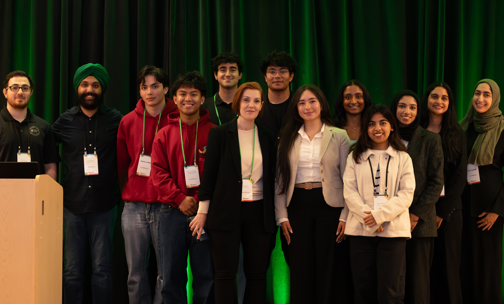
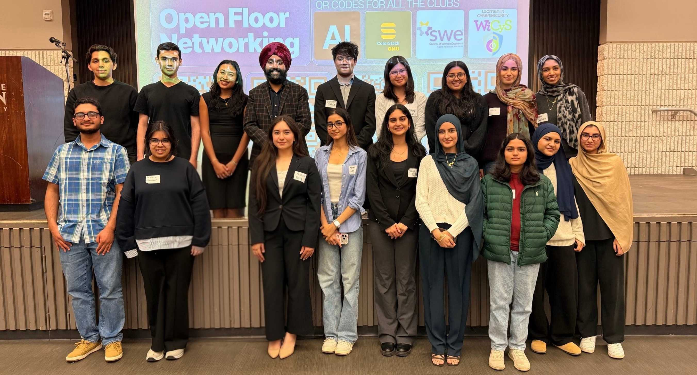
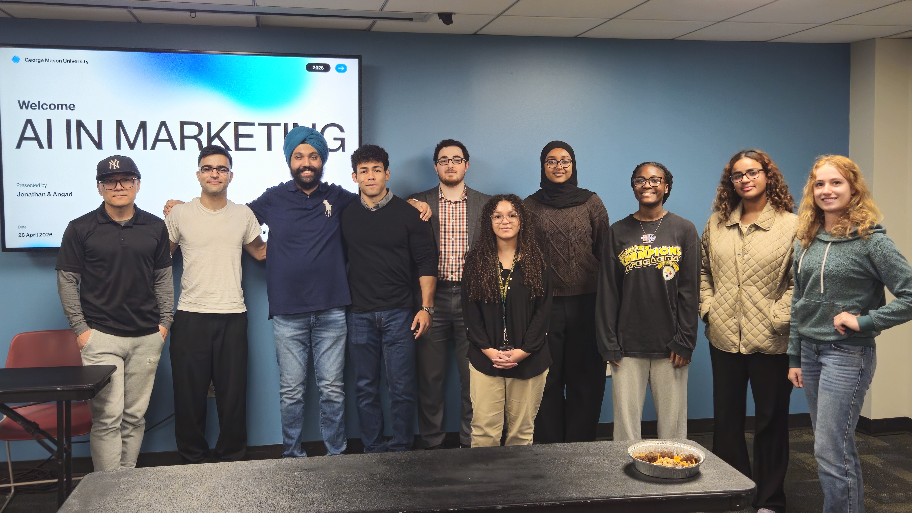
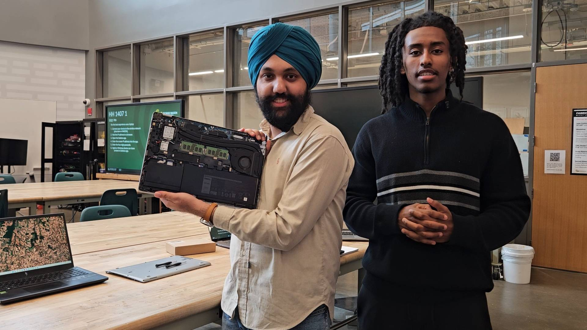
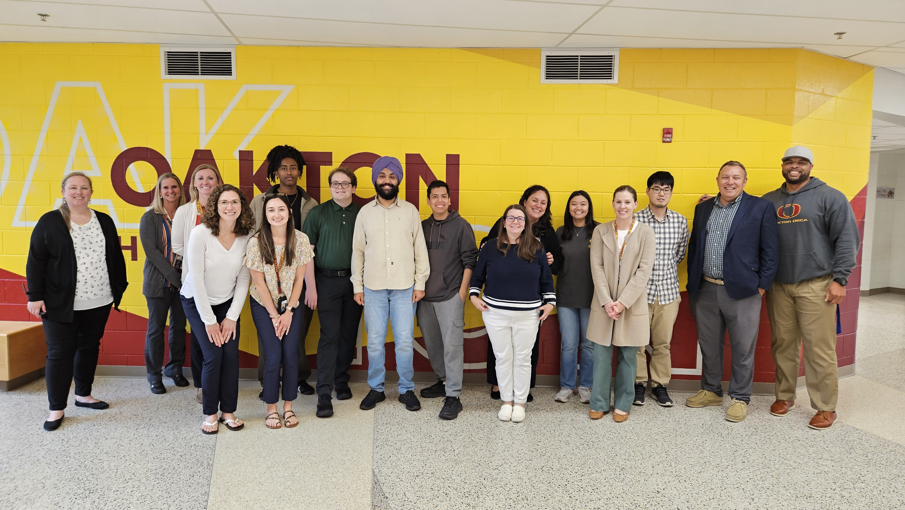
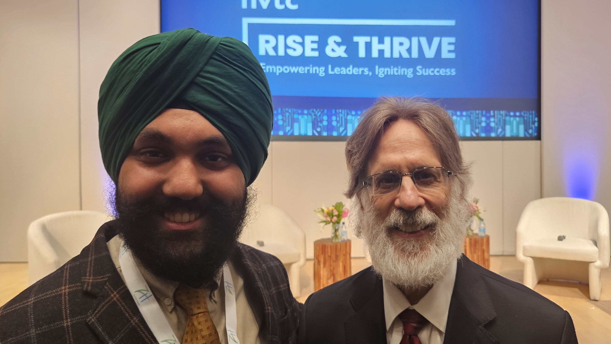
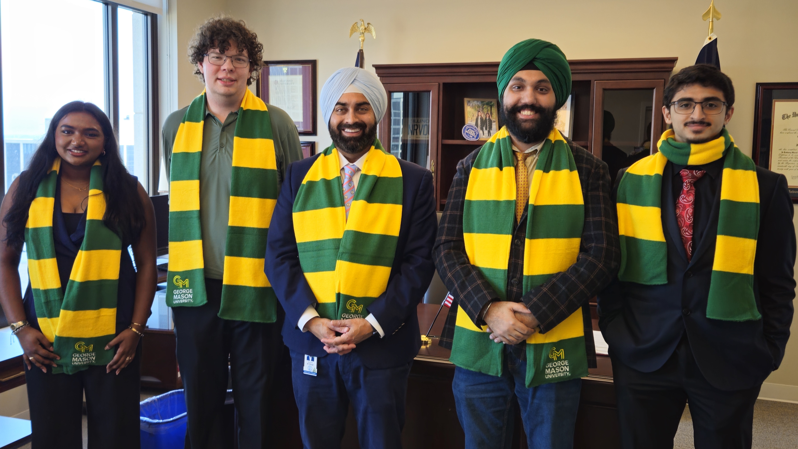
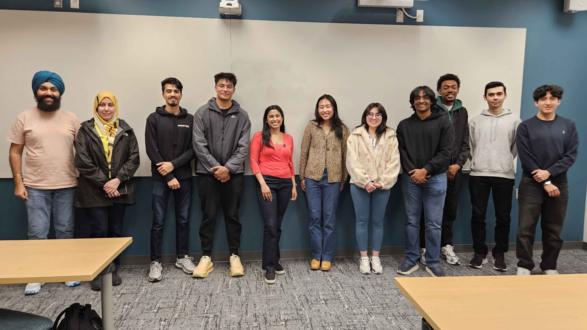
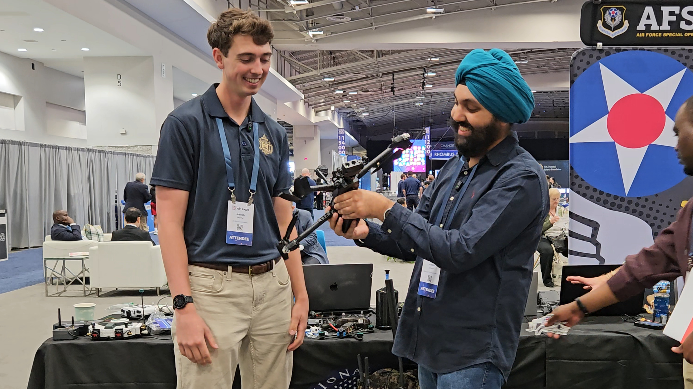
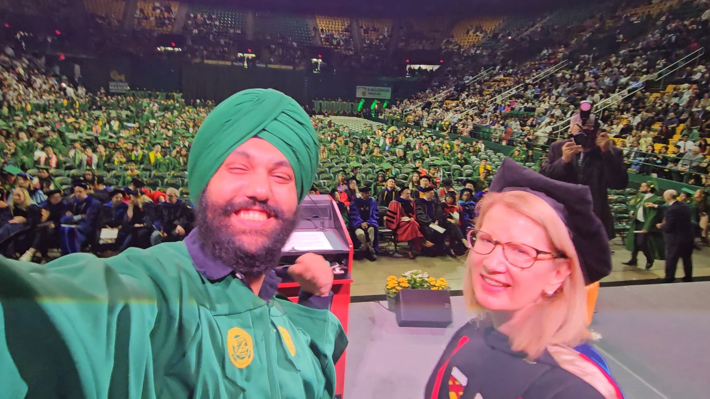
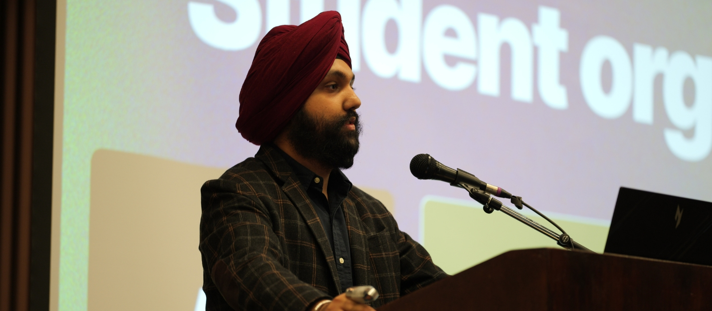
IBM · Maximus · U.S. DOT executive panel · April 2026
Led, co-ran, or presented at campus events — from speaker sessions to cross-club showcases.
Delivered large-scale forums and hackathon events with students, executives, and campus partners.
Across Loudoun Hunger Relief, Virginia STAR, Mason lobbying, and PAC events.
Live audience reached through Mason Cable Network broadcasts and media production.
Where I'm headed
I'm a data-driven builder and communicator who bridges IT operations, business analytics, and community leadership. My goal is to grow into a senior executive role — ultimately CEO — where I can build technology-led organizations that create real, lasting impact.
My near-term target is a data analyst or business intelligence role — combining my MIS background, Advanced Excel, Tableau, and SQL experience to turn raw data into decisions that move organizations forward.
As former VP of GMU's AI Club, I've seen firsthand how AI literacy changes what people can build. I want to lead technology teams that deploy AI responsibly — at the intersection of strategy and technical execution.
Through Angad Studios I'm building toward media entrepreneurship — creating channels that educate, connect, and inspire across automotive culture, AI, and career development.
Every skill I develop — communication, project management, data fluency, community building — is intentional preparation for leading an organization at scale. The C-suite is the destination.
What I know
Verified credentials
Academic background
Where I've worked & led
Giving back
Service has been a constant throughout my life — from weekly food assistance to state-level advocacy to campus event coordination.
Led 10+ volunteers weekly, scaled laptop distribution from 15 to 50 units/semester, donated 22 refurbished laptops to Oakton High School seniors, and expanded outreach to five Northern Virginia high schools. Jan 2024 – Aug 2025.
Delivered 51+ hours of service since June 2019. Assisted clients in English, Punjabi, and Spanish. Performed Market Assistant, Personal Shopper, and Greeter duties. Adapted to pandemic needs by making up to 40 deliveries per shift to support vulnerable community members.
Led a 4-member student delegation to the Virginia General Assembly. Met with Sen. Kannan Srinivasan, Del. JJ Singh, Del. David Reid, and Del. McQuinn's office. Secured commitments advocating for $7.4M "Maintain Affordability" budget, $56M Critical Maintenance fund, and a $1M AI Education Infrastructure amendment. March 2025 & March 2026 (2-year participant).
Served across multiple election officer roles (Greeter, Check-In, Ballot, Scanner, Absentee Drop Bag Officer) throughout a full 14-hour shift. Upheld rigorous security protocols and assisted voters with accessibility and technical questions.
Assisted with setup and coordination of PAC student engagement events including crafts activities and large-scale recreation events like laser tag. Volunteered for the annual Gold Rush festival — GMU's largest basketball spirit event. Aug 2025 – present.
Engaged in weekly fencing practices building physical discipline, strategic thinking, and commitment to consistent self-improvement. Jan 2023 – Aug 2024.
What others say
12 professionals — professors, mentors, collaborators, and team members — have recommended Angad on LinkedIn.
"Angad distinguished himself as an active and engaged participant… He has developed into a student leader within the MIS program and has matured into a well-rounded, driven professional. I recommend him without hesitation."
"In just a short period of time, he helped coordinate an event that brought together more than 30 employers and nearly 70 students… What stands out most about Angad is not just his technical knowledge, but his selflessness and commitment to community building."
"He’s a one-of-a-kind leader who brings empathy, consistency, and a strong work ethic to every project… Angad learns quickly, takes initiative, and makes the people around him better. I would strongly recommend him for any opportunity that values leadership or technical curiosity."
"He works well in teams and goes above what is expected… He communicates well and is able to make conversation in scenarios that most people would fail to do so. There are not many people that could be like Angad, as he is a jack of all trades, master of ALL."
"Angad essentially spearheaded the entire restructuring of the club… His obsession with technology and AI is obvious in the best possible way: he is always experimenting with new tools, sharing ideas, and pushing conversations beyond the surface level. I’m excited to see what he builds next."
"It is uncommon that a student from a technical background demonstrates such acumen with public policy communication and team leadership. But Angad consistently showed up as one such talent… He is a remarkable student leader, and I wish him all the best in his next chapters."
"What stood out most was his ability to combine organization, leadership, and execution. He consistently focused on creating value for students while helping strengthen the club’s presence and reach within the Mason community. I highly recommend Angad for leadership, operations, community-building, and project coordination roles."
"From day one, Angad stood out for his exceptional leadership, organizational skills, and deep dedication to the project… His ability to coordinate a program from the ground up while empowering others to lead is a rare quality. Angad would be a massive asset to any team."
"As my supervisor, he created a positive and collaborative environment… What stood out most to me was his ability to connect with people from all backgrounds and his genuine interest in helping others succeed. I have no doubt that Angad will continue to make a meaningful impact wherever he goes!"
"Angad delivered an engaging and insightful presentation during the AMA × AI Club collaboration event. He explained emerging AI concepts in a clear and approachable way, and his professionalism and communication skills made the session both informative and enjoyable."
"Angad came to our booth at AI Expo. He impressed me with the quality of his questions, curiosity, tact, work with equipment. He was well prepared and produced some informative interviews about the expo."
I'm always open to new opportunities, collaborations, and conversations. Share your contact with me instantly through Blinq — no app required.
Connect on Blinq